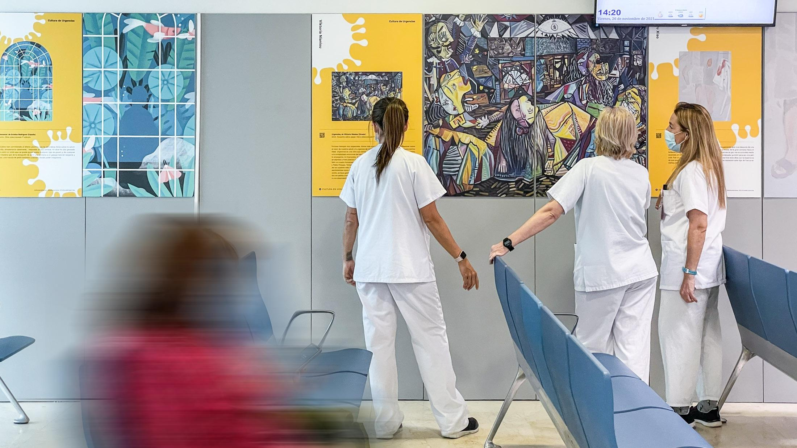

Somos una empresa dedicada a la generación de material artístico que utiliza distintos elementos del quehacer diario de los centros de salud. A través del arte y la fotografía, buscamos reflejar la vida cotidiana de los pacientes, sus vivencias, dolores y alegrías.